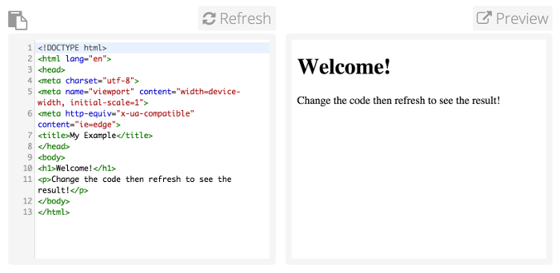

Attendance List
- Professor Powell
- Kian Ezaz
Agenda Items
- Recap what was discussed last meeting and the unfinish business that resulted
- Introduce HTML (the new technology that will be used in the next lab)
Business From the Previous Meeting
Last time, we refamiliarized ourselves with Git and introduced Markdown. We used Markdown to create User Page for Kian and published the webpage to Github Pages. Below are the links to the resources used.
New Business
Today, we are creating another webpage. However, we will be moving on from Markdown to HTML.
HTML is a language used by web browsers to render pages on the web.
Below is a sample HTML file and what is rendered on the web page.

Although HTML, CSS, and Javascript are the programming languages used by the browser, we will only be focusing on HTML today.
CSS
The language used to style an HTML document. We can use CSS to add colors, change fonts, etc.Javascript
A programming language that can be used to make web pages interactive.Additional Comments
Do not forget to fill out the Individual and Team Survey for CSE 110!